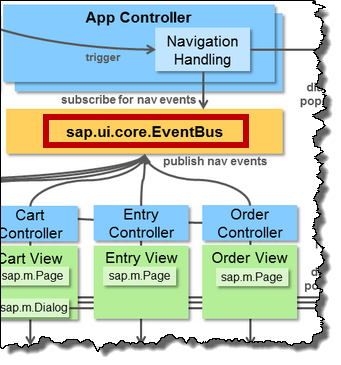
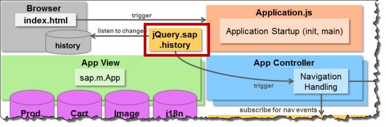
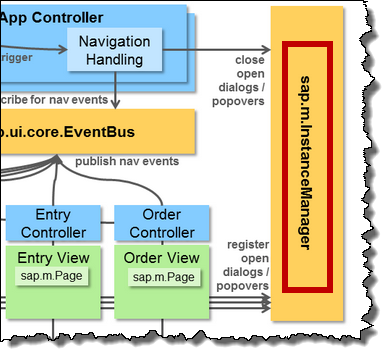

Navigation
The navigation is one of the most difficult topics in implementing mobile applications. This chapter of the best practice explains in detail how to put all the pieces together.
Navigation Events
Introduction
This section is primarily meant for SAPUI5 Mobile - in particular for applications which use the sap.m.App / sap.m.NavContainer control which handles navigation between pages - but the same convention can also be used for any SAPUI5 application where views trigger a parent to display different views.
The individual pages shall be decoupled from each other. When lazy loading pages from the server you never know if the desired page has already been loaded. To achieve this the sap.ui.core.EventBus is used. The pages publishes events that request a change in navigation. The app controller subscribes to these events and manages the sap.m.App control which lies the app view.

Standard Situations
The most typical situation is that one page wants to navigate to another page. This is done by firing a to event on the channel nav. The data object passed for the event contains a single parameter storing the id of the target page.
// navigate to product page var bus = sap.ui.getCore().getEventBus(); bus.publish("nav", "to", { id : "Product" });
When navigating to another page you might have to pass information. E.g. when showing the detail page of an object the detail page needs to know which object shall be shown. The following code samples shows how to achieve this. In addition to the id parameter a data object is passed which contains the context. The app controller then passes the data to the app control which makes it available in the onBeforeShow event of the target page.
// navigate to product page including the current databinding context var bus = sap.ui.getCore().getEventBus(); bus.publish("nav", "to", { id : "Product", data : { context : evt.getSource().getBindingContext() } });
// Receiving the onBeforeShow event in the target page sap.ui.jsview("view.Product", { ... onBeforeShow : function(evt) { this.getController().onBeforeShow(evt); }, ...
// Handling the event in the target's page controller sap.ui.controller("view.Product", { ... onBeforeShow : function(evt) { if (evt.data.context) { this.getView().setBindingContext(evt.data.context); } }, ...
If a page wants to navigate back to the previous page it fires a back event on the nav channel:
// navigate back to previous page var bus = sap.ui.getCore().getEventBus(); bus.publish("nav", "back");
If a page wants to navigate back to the start page of the application it fires a back event on the nav channel and sets the home flag to true:
// navigate back all the way to the home page var bus = sap.ui.getCore().getEventBus(); bus.publish("nav", "back", { home: true });
Before a page opens a dialog - which shall be closed on using the physical back button of a mobile device - a 'virtual' navigation needs to be triggered. This allows to close the dialog on navigating back later but is not available for forward navigation.
// add virtual state before opening a dialog var bus = sap.ui.getCore().getEventBus(); bus.publish("nav", "virtual"); sap.m.MessageBox.show(...);
Overview
This is an overview of all allowed combinations of events and parameters:
| Channel | Event | Parameters | Behaviour |
| nav | to | id (string) | Navigate to the target page |
| nav | to | id (string), data (object) | Navigate to the target page and pass additional data |
| nav | back | Navigate back to the previous page | |
| nav | back | step (int) | Navigate back multiple pages at the same time |
| nav | back | home (boolean) | Navigate back all the way to the very first page |
| nav | virtual | Navigate to a virtual state |
If you follow the above conventions, you can copy the App.controller.js from the Navigation Demo App? and use it as a start point for your own application.
Handling the Browser History
Some of the mobile devices like Android and Windows phones have a physical back button which triggers for both web and hybrid apps a back navigation of the browser history. Learn More about this ...
As such the only way to deal with this is to listen to history changes and trigger the appropriate navigation. The app controller uses the jQuery history plugin which provides a more convenient API and additional features.

All interaction with the browser history is encapsulated in the App controller as this is some of the more ugly code. None of the pages directly interacts with the history. Depending on the navigation events the app controllers performs the relevant modifications.
This code sample shows how the app controller registers to history changes:
sap.ui.controller("view.App", { onInit : function() { jQuery.sap.history({ routes: [{ // This handler is executed when you navigate back to the history state on the path "page" path : "page", handler: jQuery.proxy(historyPageHandler, this) }], // The default handler is executed when you navigate back to the history state with an empty hash defaultHandler: jQuery.proxy(historyDefaultHandler, this) }); ...
This code sample shows how the app controller adds history tokens when navigating to a new page:
sap.ui.controller("view.App", { ... navTo : function(id, writeHistory, navType, data) { ... // write history if (writeHistory === undefined || writeHistory) { jQuery.sap.history.addHistory("page", {id: id}, false); }
Handling Popups
Special attention is required for handling popups in navigation. We need to consider these types:
- sap.m.Dialog
- sap.m.BusyDialog
- sap.m.Popover
- sap.m.MessageToast
- sap.m.ActionSheet which is more a convenience API that creates dialogs or popovers depending on the device
Mobile interaction design requires the following behavior for backward navigation:
- If a (Busy)Dialog is open it shall be closed BUT the current page stays in place. All dialogs are modal and as such are navigation relevant steps.
- If a Popover or MessageToast is open it shall be closed AND the previous page shall be shown. These popovers are not modal and as such not an own step in navigation.
Luckily the closing of popups can be managed generically in the app controller. When popups are opened they automatically register themselves in the sap.m.InstanceManager. This allows the app controller to easily check for open popups on navigating back and closing them. Thus the page developer has no need to close popups if backward navigation is triggered from the browser history.

This is the central code in the app controller that is executed on backward navigation:
... if(sap.m.InstanceManager.hasOpenDialog()){ // close open dialogs sap.m.InstanceManager.closeAllDialogs(); jQuery.sap.log.info("navBack - closed dialog(s)"); } if (sap.m.InstanceManager.hasOpenPopover()) { // close open popovers and message toasts sap.m.InstanceManager.closeAllPopovers(); jQuery.sap.log.info("navBack - closed popover(s)"); } ...
 While the page developer can ignore the closing of popups he has some obligations when working with dialogs:
While the page developer can ignore the closing of popups he has some obligations when working with dialogs:
- (I) When opening the dialog a virtual navigation must be fired
- (II) When closing the dialog by taping on the buttons a back navigation must be fired. If the dialog was closed by the browser history this has already happended and must NOT be done again.
// (I) add virtual state before opening a dialog sap.ui.getCore().getEventBus().publish("nav", "virtual"); // show confirmation dialog sap.m.MessageBox.show( "Do you really want to delete this object?", sap.m.MessageBox.Icon.QUESTION, "Confirmation", [sap.m.MessageBox.Action.CANCEL, sap.m.MessageBox.Action.DELETE], jQuery.proxy(function(oAction) { // (II) remove virtual state if dialog not closed by history if (oAction) { sap.ui.getCore().getEventBus().publish("nav", "back"); } // really delete the object if (sap.m.MessageBox.Action.DELETE === oAction) { ... } }, this) );
Even though you can configure a Busy Dialog to be shown without cancel button the user can always cancel the Busy Dialog with a device back button. As such you always need to handle the close event and abort or ignore the triggered operation.